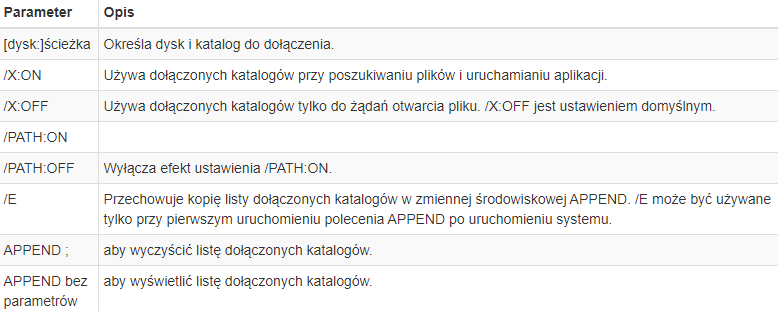
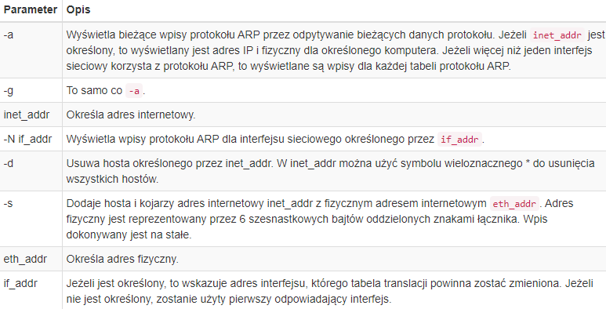
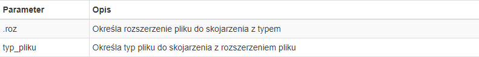
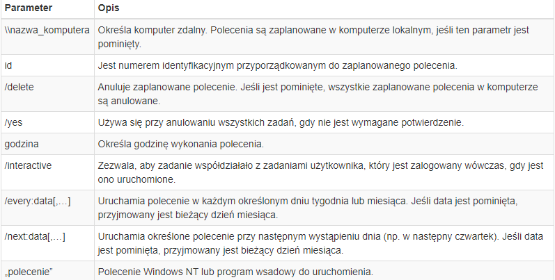
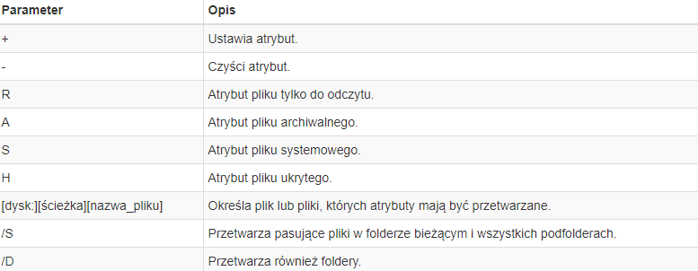
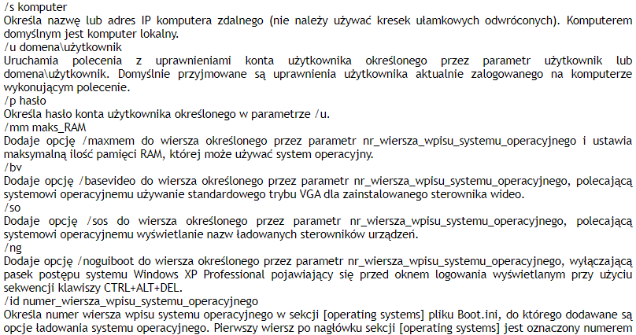
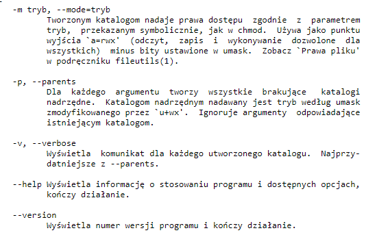
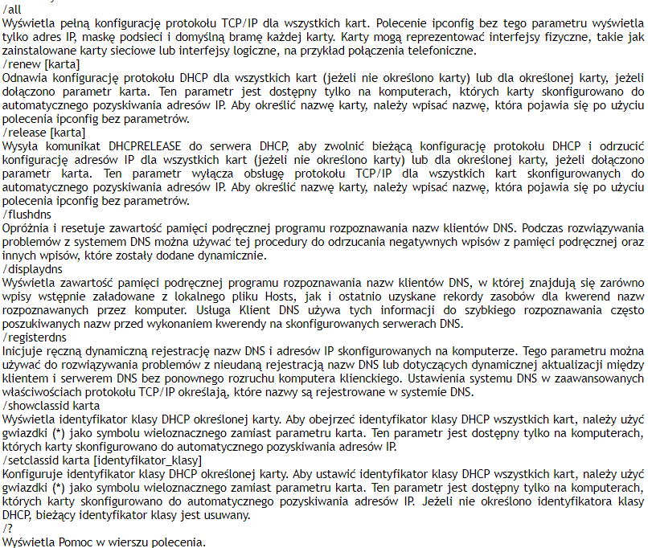

ROZWINIĘCIE KOMEND (PARAMETRY ORAZ SKŁADNIA)
APPEND
APPEND [[dysk:]ścieżka[;...]] [/X[:ON | :OFF]] [/PATH:ON | /PATH:OFF] [/E] APPEND ;
parametry
ARP
ARP -s inet_addr eth_addr [if_addr] ARP -d inet_addr [if_addr] ARP -a [inet_addr] [-N if_addr]
parametry
ASSOC
ASSOC [.roz[=[typ_pliku]]]
parametry
AT
AT [\\nazwa_komputera] [ [id] [/DELETE] | /DELETE [/YES]] AT [\\nazwa_komputera] godzina [/INTERACTIVE] [ /EVERY:data[,...] | /NEXT:data[,...]] "polecenie"/br>
parametry
ATTRIB
ATTRIB [+R | -R] [+A | -A ] [+S | -S] [+H | -H] [dysk:] [ścieżka] [nazwa_pliku] [/S [/D]]
parametry
AUDITUSR
parametry

BOOTCFG
bootcfg /addsw [/s komputer [/u domena\użytkownik /p hasło]] [/mm maks_RAM] [/bv] [/so] [/ng] /id nr_wiersza_wpisu_systemu_operacyjnego
parametry
MKDIR
mkdir [opcja] katalog
parametry
IPCONFIG
ipconfig [/all] [/renew [karta]] [/release [karta]] [/flushdns] [/displaydns] [/registerdns] [/showclassid karta] [/setclassid karta [identyfikator_klasy]]
parametry
SFC
sfc [/scannow] [/scanonce] [/scanboot] [/revert] [/purgecache] [/cachesize=x]